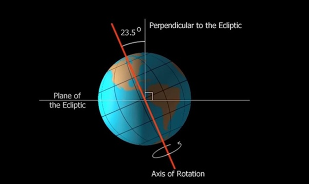
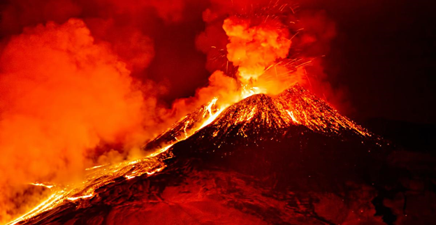

What would happen if the moon was destroyed or exploded? How long will it take for the earth to be destroyed?
If the moon is removed from the solar system, then what will happen is called doom, if there is some terrible word than doom, then accept the same. Let us read in detail. I'm sure it's very interesting.At the end of the article, there is a very interesting information about the planet Mars, definitely read it, then it will be easy to believe the things written here. If the moon is destroyed, then all the scientists of the world say that it will take at most six days for life on earth to be destroyed. Let us know what will happen in different hours or days. After that I will tell you why this would happen.
First day
The moon has been destroyed, suddenly high waves have started rising on the earth. In just 5 minutes, all the islands on the earth, remember the seaside city areas, all will be completely destroyed by water. People will see doom with their own eyes. After the next one hour, the waves will calm down, taking many cities and millions of people in the lap.
Next six hours
You all must know that due to the force of gravity of the Moon, the Earth rotates on 23.5 degree axis.
And when the moon is not there, then the earth will start trembling on its axis because the force of gravity (moon) will also have disappeared, the speed of the earth's rotation will increase greatly, due to which the weather on the earth will start changing very quickly, where people are from the heat. In a few minutes there would be snowfall. Due to the vibrations, there would be unmeasurable earthquakes and volcanoes would start erupting.
A day will be only 3 hours
I have already told this that when the moon is not there, the speed of the earth which was slow due to the gravitational force of the moon will increase, due to this, 2 days ago it was 24 hours, now it will be only 6 hours 3 hours day Yes 3 hours night.
Some more amazing things
Without the moon, there will be weather on the earth, if some people are left, then there will be a lot of trouble in the first hour, it will be very hot and the next 1 hour will be so cold that the rivers and sea water will freeze. Due to this change, marine life will be destroyed.
Now let's find out about the scientific reasons behind this doom.
It is believed that at some point the earth used to revolve around the sun alone, but one day in the midst of the infinite expansion of space, a planet of the size of Mars collided with the earth and the earth became many pieces and that piece was separated from the earth in space. Scientists say that after a process of thousands of years, the earth's brother, the moon (Chanda Mama) became a planet.
After a few years, life began to flourish on the earth, scientists believe that life on earth became possible after the formation of the moon or if the moon did not come in the moon, then life on earth was not possible. Now you must be thinking that how life would be possible due to the moon, which you have already read above. We have enough evidence to prove this.
To understand this, let us understand that if the moon is destroyed, then what is the existence of the earth, will life still exist.
The moon controls all the oceans on the earth, the moon moves the sea moving around the earth.
And because of someone, the water rises very high in the sea, which we call waves.
Due to this gravitational force, the tides rise, we often see the rise of waves in a movie or on the beach, but think that it is probably due to the wind, then today you people know that this wind Not because of the moon, but because of the moon present in space, about 3,84,400 km away from the earth.